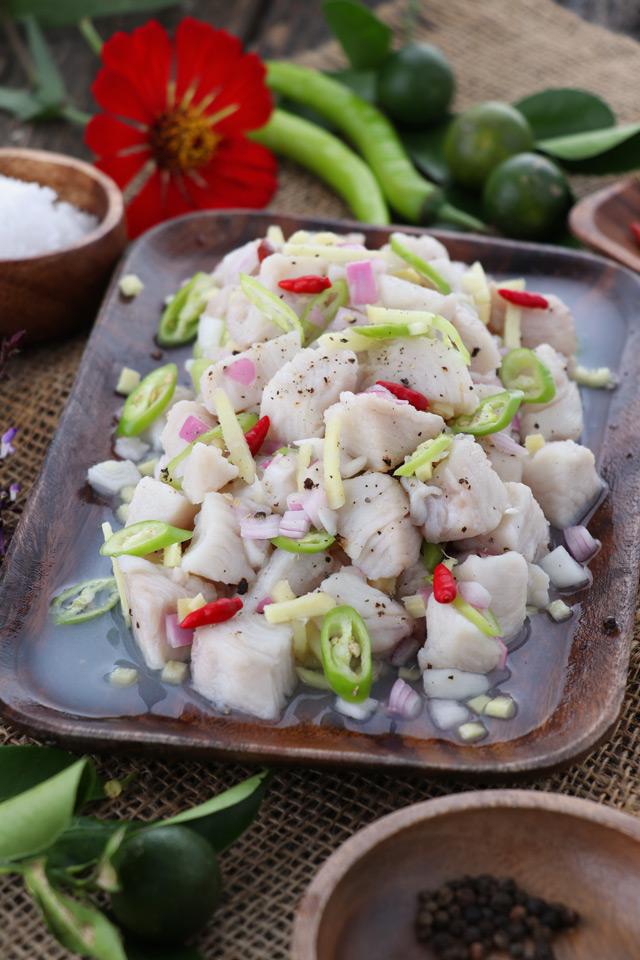

Fried Chicken

Description:
It is not actually the dish but the process of preparing it. It hailed from the Visayan region and is derived from the word, kilaw, which means raw or uncooked. The meat, normally a fish, is 'cooked' without the application of heat but is rather cured in vinegar.
Ingredients
- 1 kilogram tuna skinned
- 1 cup vinegar
- 4 pieces kalamansi
- 2 thumbs ginger minced
- 1 medium red onion minced
- 2 Green chilli and 6 Labuyo(adust on your preference)
- Ground pepper
- 1 cup coconut milk
Steps
- Wash the fish meat and tap dry with paper towels. Cut into 1-inch cubes.
- Place the fish cubes in a bowl. Pour in the vinegar and the juice from calamansi. Season with salt and pepper. Add the ginger, onion, and chili. Toss gently until well blended.
- Pour the coconul milk.
- Cover and marinate for an hour or up to 3 hours in the fridge. The fish should lose its translucent and pinkish color and should turn whiter and opaque.
- transfer to a serving dish and serve immediately.